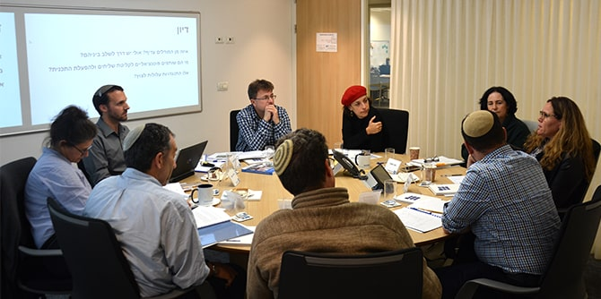

הקונסיליום הוא תהליך ייעוצי הניתן לבוגרים ביחידת בוגרי מנדל כחלק מתהליכי הפיתוח המקצועי שלהם. הוא נושא אופי של סיעור מוחות ומטרתו לאפשר למידה, חשיבה ודיון באתגרים הכרוכים ביוזמה שברצונם להוביל או בהיבטים מאתגרים בעשייתם המקצועית.
במהלך לימודיו במרכז מנדל למנהיגות בצפון התעמק נתנאל במורכבות המאפיינת את קשרי ישראל והתפוצות בימינו, ובשאלה כיצד יוצרים מחדש קירוב לבבות חרף מחלוקות פוליטיות ותהליכים סוציולוגיים הגורמים להתרחקות. "תוכנית אמבסדורס" שגיבש נתנאל כדי להתמודד עם מגמת הריחוק, מניחה במרכזה מודל הפוך של שליחות: לא עוד שליחות חד-כיוונית מישראל לתפוצות, אלא שליחים מקרב יהודי התפוצות שיגיעו ארצה וינחילו לקהילות בישראל את העושר התרבותי, הקהילתי והערכי הגלום בקהילות היהודיות בתפוצות.

הנחת היסוד של התוכנית היא שעתידנו כעם מאוחד חייב להתבסס על מערכת יחסים הדדית, ושהיהודים בישראל צריכים להכיר ולהבין את יהדות התפוצות. נתנאל מבקש לפעול למען העמקת ההיכרות ההדדית ולתרום ליצירת שיח חדש, למציאת ערכים משותפים נוספים ולעדכון המכנה המשותף.
בקונסיליום השתתפו מומחים לנושא: אמירה אהרונוביץ, מנכ"לית הסוכנות היהודית ובוגרת מחזור כ"ב של בית ספר מנדל למנהיגות חינוכית, שלום אור זך, יועץ בכיר ל- Icenter for Israel Education ובוגר מחזור כ' של תוכנית עמיתי ירושלים, ד"ר דניאל גורדיס, סגן נשיא ועמית בכיר על שם קורת במרכז האקדמי שלם, ד"ר אריה חסקין מנהל אגף קהילות של התנועה המסורתית בישראל ובוגר מחזור ט"ו של בית ספר מנדל למנהיגות חינוכית, בקי כספי, סגנית נשיא בכירה ומנכ"לית JFNA ישראל, תהלה פרידמן-נחלון, מנהלת תוכנית העמיתים של מכון שחרית ובוגרת מחזור כ"א של בית ספר מנדל למנהיגות חינוכית, ומישאל ציון, מנהל תוכנית מנדל למנהיגות בתרבות יהודית במכון מנדל למנהיגות.
איילה בבלי, חברת צוות יחידת בוגרי מנדל, ליוותה את
נתנאל אפק בתהליך ההכנה לקונסיליום ובהוצאתו לפועל.
{kind=link}